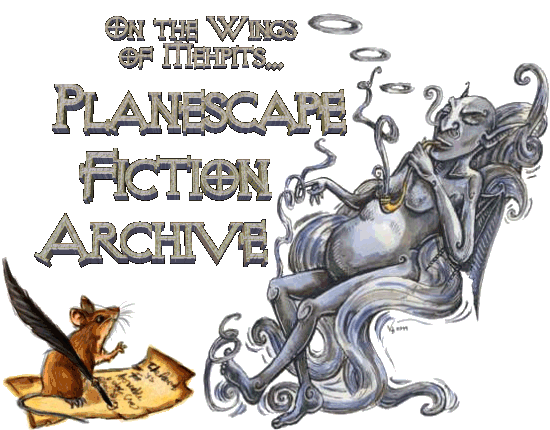

|  | |
| Mouse Scribe copyright CoyotePuck | Smoke Mephit copyright Vicki Hood |
May 19, 2004 |
|
Who's this? Another visitor to my hall of books? Well, fellow biblophile, don't just stand there, come in! The door isn't locked. Please, make yourself at home. There are some chairs over there for you to sit in. You might want to drag them closer to the light to make the reading easier. The books are through those doors over there. Oh, and as long as you're up, would you mind getting me a refill for my pipe? Thank you. I would get it myself, but I only just sat down a few moments before you got here. I'm also feeling rather tired of late. Oh, and as you can see, I'm right in the middle of dictating some wonderful new stories I overheard. Before I begin to direct you around my humble home, I suppose that some introductions are in order. These web pages over which I cast my watchful eyes are collectively known as The Planescape Fiction Archive. They are home to every known piece of fan fiction that is set in the PLANESCAPE campaign world. If you would like to know more about PLANESCAPE, I suggest you visit our father site, On the Wings of Mephits.... You can look down at the bottom of this page for the link. As for me, I am mephit. My name is Smogarentio de la Conjestico, Stealer of Breath, Inflicter of Allergies, Author Extrodinaire, and richest of all Smoke Mephits! *AHEM* Oh. Yes. And that rodent in the corner is my lowly assistant, Nib. Now where was I? Ah, yes. The fiction. It is so wonderful to have a fellow lover of the printed word come and visit me. In fact, I'd so love it if you would come over here and shake my hand. I'd get up to greet you, but my back has been acting up recently. Ah, you're so kind. Unfortunately, I have just so many things to attend to, that I really can't take the time to show you around personally. Nib, why don't you take a break and take care of our visitor? Of course. Certainly, Mr. Conjestico. If you would follow me, please? Now that we're away from that blowhard, I can give you the true chant. That smoke mephit over there doesn't do a single whisker of work around here. I know that his kind are supposed to be lazy, but he's nearly beyond Hercules' Pillar. Do you realize that he hasn't been out of that chair in over a year? I'd wish a good, strong wind would come along and disperse him. Anyway, since I'm the one that has to do everything here, I really know my way around. Allow me to give you the guided tour to the contents of these pages... |
 |
The Wall of Wet Ink
This is the place where I write notes to keep track of what's changed or been added recently in these pages. It's also something of a courtesy to visitors such as yourself. By writing things in big letters on the wall behind our resident case of lung conjestion, it will save you the trouble of listening to him pretend to know what's going on and then eventually asking me to tell you what's new. Trust me, the less you have to deal with the mephit, the better. |
|
The Main Chamber
This vast room represents the bulk of our collection of Planescape related fiction. (Well, it's actually my collection if the truth is to be told. Vapor-boy over there has only the vaguest notion of what stories are kept on the shelves. Heck, I doubt he'd recognize one of our stories even if it fell on his head. Hmmm... I think I'll test that theory later.) Each shelf holds the work of a multitude of authors. The most popular story is a copy of what is probably the first, and definitely the most sought-after and well-known, piece of fiction - Fire and Dust. It's usually what people are looking for when they come here. Unfortunately, it seems that nearly all of the authors whose work we host are wandering bards. They are constantly on the move, so we never know quite when we'll get a new story from them. Also, some of them have moved so far Out of Touch that we no longer know how to contact them. The stories of these authors shall remain here as something of a tribute to an era of by-gone inspiration. |
|
The Alcoves
This hallway and its numerous archways represent the other service that our home provides. For a wide variety of reasons, we are not able to own copies of every single piece of Planescape fiction that exists. But, I'm not going to let that stop anyone from reading the things. I've managed to create portals to each of these distant works so that they are still accessible and known to the general public. (Yes, that's right, I said 'create'. Don't ask how. I'm a mouse; I can get into anything. Let's just leave it at that.) Hopefully, as time goes by, I'll be able to convince their current owners to allow me to set aside shelf space for them in the Main Chamber. |
|
The Artists' Corner
This portion of our library is something of an experiment. I assume you've all heard the expression "one picture is worth a thousand words"? Well, the walls of this chamber attempt to prove that. I've recently gotten a hold of some original artwork and, lacking a better place to put it, decided to spruce up the dusty shelves a bit with some visual fiction. I hope you don't mind my initiative - Smogarentio certainly doesn't (it's one less thing he has to ignore around here). |
|
Ahh... you've returned. I trust you had a good read? Now, before you go, I'd to ask for just one more favor. If you'd just go over there and - *THUD* Ouch! What hit me? Where'd this book come from? Fire and Dust? Can't say I'd ever heard of it. Not part of my collection, surely. Ah-ha! I knew it! I told you he was a lazy, ignorant mass of polloution. NIB!!! I heard that, you disrespectful refugee from a lab experiment! Come over here and I'll give you such a drubbing. Do you hear me, Nib? Don't make me get out of this chair. I'm warning you... |
 |
Visit the Main Site - On the Wings of Mephits... |